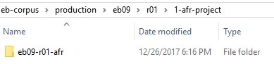

Container for OCR Project files for ABBYY FineReader.
These are the ABBYY FineReaderOCR-Project folders that containing one 250-page section. An OCR-Project retains the text
boxes and language settings and can be used to output text in multiple formats. The
folder name includes the edition abbreviation, section(eb09-r01). New OCR-Project folders
overwrite earlier ones, so we only keep the most recent version.
Figure: 1-afr-project folder

DANGER
OCR-Project folders contain hidden files
by default that are essential to their retention of text boxes, etc. When creating
an OCR-Project folder, change the attribute value on the
three hidden files to unhidden to ensure that they
are included whenever the folder is copied.